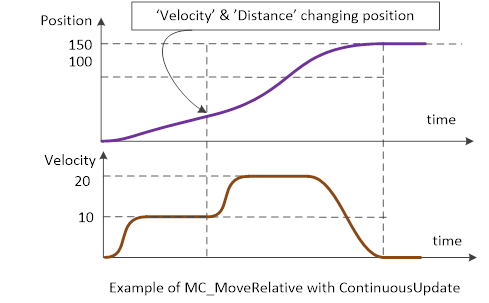

ContinuousUpdate Input
Description:
The input
ContinuousUpdate is an extended input to
all applicable function blocks. If it is TRUE, when the function block is
triggered (rising
Execute), it will – as long as it stays TRUE – make
the function block use the current values of the input variables and apply to
the ongoing movement. This does not influence the general behaviour of the
function block nor does it impact the state diagram. In other word, it only
influences the ongoing movement and its impact ends as soon as the function
block is no longer
Busy or the input
ContinuousUpdate is set to
FALSE.
If
ContinuousUpdate is FALSE with the rising edge of
the
Execute input, a change in the input parameters is ignored during
the whole movement and the original behaviour of previous version is
applicable.
The
ContinuousUpdate is not a retriggering of the
Execute
input of the function block (a retriggering of a function block which was
previously aborted, stopped, or completed, would regain control on the axis and
modify its state diagram), so
ContinuousUpdate only affects ongoing
motion.
Also, a
ContinuousUpdate of relative inputs (e.g. the
Distance input in MC_MoveRelative) always refers to the initial
condition (i.e. at the rising edge of
Execute).
Examples:
|
 Examples
Examples
|
|
•
MC_MoveRelative is started at
Position
0 with
Distance 100,
Velocity 10 and
ContinuousUpdate
set TRUE.
Execute is changed to TRUE and so the movement is started to
position 100
•
While the movement is executed
(before finishing the movement), the input
Distance is changed to 150,
Velocity 20.
•
The axis will accelerate (to the new
Velocity
20) and stop at
Position 150 and set the output
Done and does
not accept any new values.
|

See also: